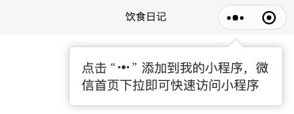

怎么给三角形加border，添加到我的小程序UI实现以及需要注意的问题
这篇文章发布于 2020/02/29，归类于 CSS
标签：
css 三角形加border，css 用border画的三角形怎么加border，小程序添加到我的小程序引导UI实现
在给小程序添加 "添加到我的小程序" 引导时，里面有个带边框的三角形，如下图

一般用css画三角形使用的是border，但三角形边的边框怎么画呢？一般用两个三角形叠加来实现
<view class="add-to-mymptips">
<view class="atm-angle-a"></view>
<view class="atm-angle-b"></view>
<view class="atm-main">
点击 <image src="/images/three_point.png"></image> 添加到我的小程序，微信首页下拉即可快速访问小程序
</view>
</view>来看css样式
.add-to-mymptips {
position: absolute;
right: 15px;
width: 270px;
margin-top:15px;
box-sizing: border-box;
}
/* 主内容区域 */
.atm-main {
padding: 15px;
border: 1px solid #ddd;
border-radius: 5px;
box-shadow: 0 0 10px #ccc;
color:rgb(53, 53, 53);
}
/* 三个点图片样式 */
.atm-main image {
width: 33px;
height: 15px;
}
/* 三角形+边框 区域 */
.atm-angle-a, .atm-angle-b {
position: absolute;
margin-left:200px;
width: 0;
height: 0;
border: 10px solid;
}
.atm-angle-a {
top: -20px;
border-color: transparent transparent #ccc;
}
.atm-angle-b {
top:-19px;
border-color: transparent transparent #fff;
}参考：
添加到我的小程序引导tips被原生组件遮挡的问题
在小程序里，为了增加用户留存，会做一个引导用户添加到我的小程序的提示面板
今天自己实现了下，发现原生组件遮挡了这个提示，貌似暂时没有很好的解决方法
所以，当设计小程序UI时，尽量不要在顶部使用原生组件。
参考：